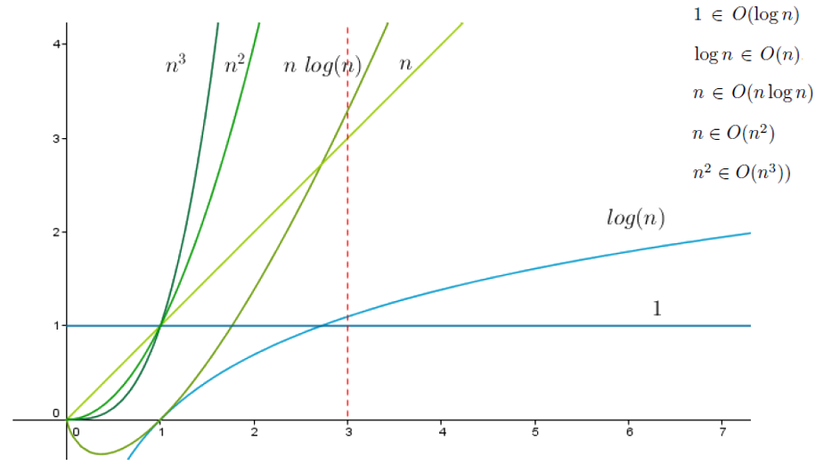
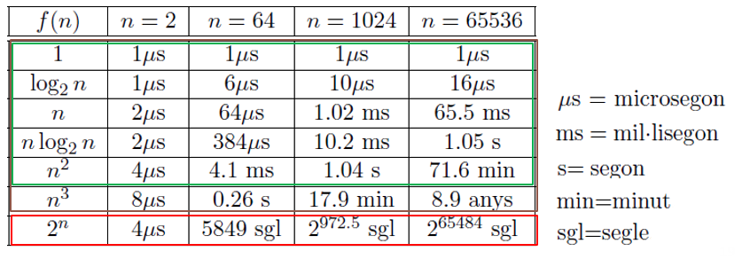

1.3 ORDRES DE COMPLEXITAT
Ordre de complexitat
L'ordre de complexitat és utiltizat per fer una estimació matemàtica del nombre d'operacions que realitza el nostre algorisme. Com s'ha explicat anteriorment les operacions unitàries, podrem veure quantes operacions està utilitzant.També veurem que passa quan un programa és molt extens o bé, el nombre d'operacions creix.
Càlcul del nombre d'operacions
Per exemple:
int suma = 0;
for(int i = 0; i != 9; i++)
{
suma+=i; //Cost unitàri, operació aritmètica.
}
Està clar aque aquest programa és exageradament simple, però què passaria si tinguessim un programa molt més extens?. La resposta és que ens tocaria contar de la mateixa forma que hem fet anteriorment, fet que torna el càlcul de l'eficiència ineficient.
Per tal de calcular més ràpidament el càlcul de les operacions, s'utiltiza l'ordre de complexitat.
Ordre de complexitat
Per calcular l'ordre de complexitat, assumirem que les nostres dades d'entrada poden ser infinites, i és per això que no ens importa quin cost exacta té, sinó com és la funció que descriu el nombre d'operacions en funció de les dades..
Aquestes funcions tindràn un creixament que serà d'un dels següents tipus:
Eix X = Mida dades. Eix Y = Nombre d'operacions.  En un primer cop d'ull potser no es pot veure la gran diferència entre aquestes funcions, de manera que anirem a posar alguns valors: (Hem considerat que una operació unitària tarda 1 microsegon)  De color verd tenim tots aquells ordres que es poden donar a la vida real i, podem acceptar. En canvi en vermell tenim tots aquells que no són tractables i per tant, si mai ens surt un algorisme d'aquest ordre cal buscar la forma d'optimitzar-lo.
Operacions entre ordres
- Suma: Sumarem quan tenim una estructura seqüencial.
- Multiplicació: Multiplicarem quan tenim una estructura iterativa.